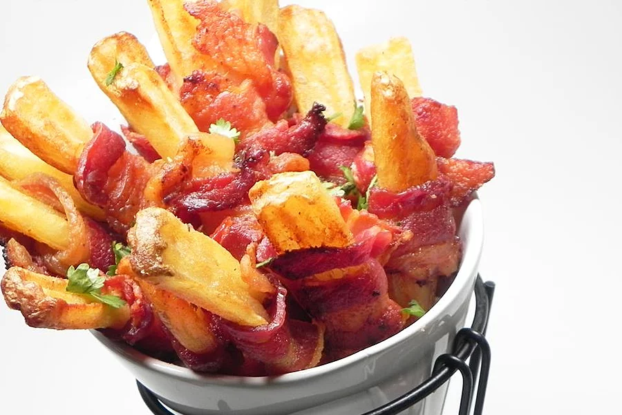

Bacon fries

Description
Bacon fries are just something out of this world.
If French fries weren't already perfect by themselves, now make them even more awesome by wrapping bacon around them.
Garnish with parsley flakes and eat while warm, with a sriracha ketchup sauce if you like.
Ingredients
- cooking spray
- 1 (28 ounce) package frozen steak fries
- 1 (16 ounce) package bacon slices, halved
- ¼ teaspoon seasoned salt
Steps
-
Preheat oven to 475 degrees F (245 degrees C).
Spray a large baking sheet with cooking spray.
-
Wrap half a bacon slice around each French fry and place seam side-down on the baking sheet about 1-inch apart.
-
Bake in the preheated oven until bacon is browned and crisp, about 30 minutes.
Remove from oven and sprinkle with seasoned salt. Transfer to serving plate.
home